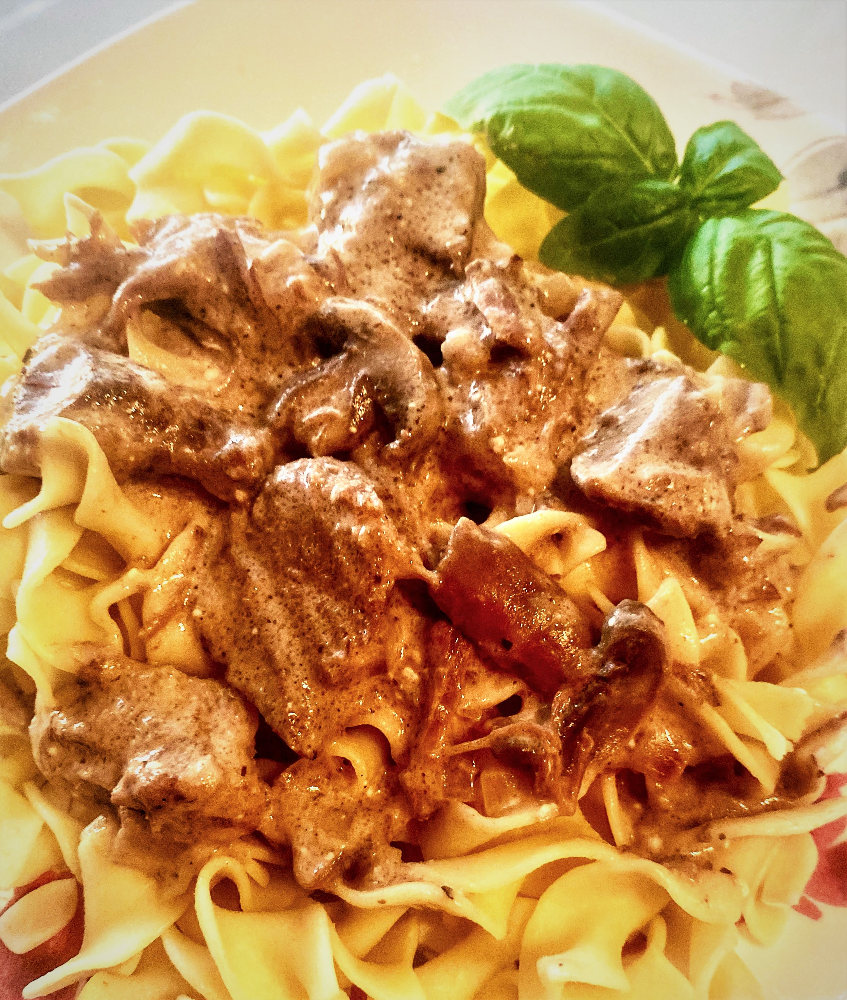

A beautiful and easy beef stroganoff!
This recipe is wonderfully easy and will produce a delicious and creamy stroganoff, with barely any effort!
Ingredients:
- 1 ⅓ pounds cubed beef stew meat
- 2 cups fresh mushrooms, thickly sliced
- 1 (10.75 ounce) can condensed cream of mushroom soup
- 1 cup milk
- 2 chopped onions
- 2 tbsp Worcestershire sauce
- 6 ounces herb and garlic-flavored cream cheese
- 1 cup pasta of your choice
- ¼ cup sour cream (Optional)
Directions:
- Combine beef, mushrooms, cream of mushroom soup, milk, onions, and Worcestershire sauce in a slow cooker.
- Cook on High for 3 to 4 hours, or on Low for 5 to 7 hours. Stir in cream cheese until well dissolved; cook for 1 hour more.
- During the last 20 minutes of cooking, bring a large pot of lightly salted water to a boil. Add pasta to the boiling water and cook, stirring occasionally, until tender yet firm to the bite, about 12 minutes. Drain.
- Serve stroganoff over pasta and garnish with sour cream.
Back to Home Page